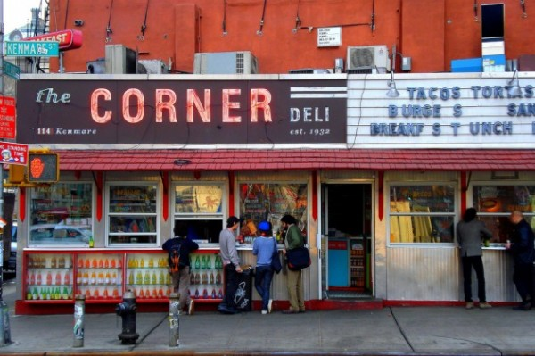
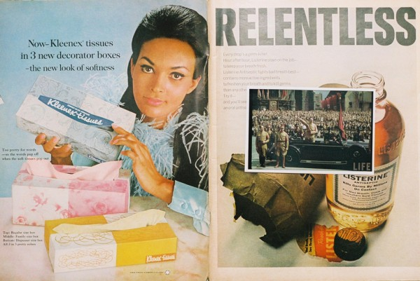
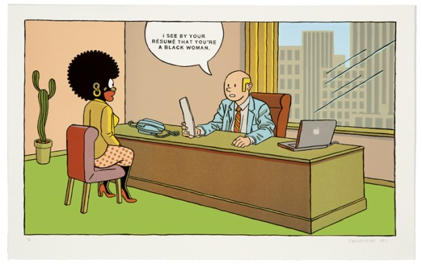

-
Selection No. 6
by Kimberly Drew January 8, 2013
Stasia Irons and Catherine Harris-White of THEESatisfaction. courtesy of Sub Pop Records.
1. It is pretty safe to say that I live in the internet. I sleep next to my laptop and carry my iPhone close to my chest everyday. One of the better parts of the internet (thug) life is meeting people from the net IRL (in real life).
Two summers ago I got into THEESatisfaction heavy. Songs like I Nigress and Permission to Bash were on every playlist. When I heard that these ladies were coming to New York for a show I knew I had to go. I have always been cautious when meeting people that I admire (Amiri Baraka, Shangela, Q-Tip, so on) but meeting Cat and Stas was a breeze. Much like their laid back style of dress and music they are good people, as well as incredible musicians and performers. Their video for QueenS, directed by dream hampton, is here.
2. Someone somewhere once said, “behind every great man is a great woman.” I’d say about 99% of the time that quote is completely inaccurate, unless we are talking about the male rap clique. Within every great rap group there is an even greater femcee. The first ladies (and female affiliates) of Ruff Ryders, Gangstarr, No Limit, Bad Boy, and Three 6 Mafia make my heart sing. From Bahamadia to Mia X, a few of those unladylike lyricists:
Lil’ Kim (Bad Boy/La Bella Mafia/Junior M.A.F.I.A.) — Can’t F*ck With Bee
Eve (Ruff Ryders) — Tambourine
Mia X (of No Limit) x Take Ya Man
La Esquina, 114 Kenmare, NY. courtesy of Grandlife Hotels.
3. La Esquina’s beef tacos are the best things I’ve ever ordered from a restaurant (under $5). I’m not sure how else to put it… I’ve walked, waited in lines, shed tears and borrowed money for the warm, meaty goodness of their dishes. They have two locations one on Kenmare in the LES — one pretty close to New Museum, and the other in Williamsburg around the corner from Glasslands Gallery. If you love tacos, good food, and live in New York you’d best find yourself in an Esquina ASAP. Oh, and they deliver.
4. Khalil Joseph recently directed two breath-taking short films for Shabazz Palaces’s Black UP and Black UP and Flying Lotus’s Until the Quiet Comes. I came across his video for Flying Lotus on a whim one sunny Saturday morning while eating a bowl of cheerios with vanilla almond milk. Back to Joseph, I watched the video and began to tear up, his work — specifically this moment — reset my thoughts about the ways that black, male sexuality could be displayed in contemporary film. (Also, if you are like me and think about gender representation and/or black male bodies in motion peep this, this and this).
The video for Black Up was already a win because I love the track and have been a Shabazz Palaces fan for a while. The video serves as metaphor for a fever dream, taking the viewer on a journey through a New York that is rarely seen. Joseph creates a dynamic, urban scene that is juxtaposed with the seeming serenity of nature occupied by corpses-like, immobile black figures.
Nikita Gale’s 580. courtesy of the artist.
5. Where do I even start when talking about the incredible Nikita Gale? This southern belle’s artwork is so cool! A self-taught conceptual artist Nikita is killing it. Her formal education is rooted in anthropology which you can see in works like her series Ad Tension that features old ads that are layered with photographs from incongruent, impactful moments in history. For example, she lays a photograph of Hitler over an ad for Kleenex:
work from NIkita Gales’s Ad Tension series. courtesy of the artist.
Gale’s work shows a deep understanding of the human experience. Her text work interrogates literacy and text. In her series 580, Gale writes please hundreds of times on a wall — the repetition engages our connotation and overuse of the the word Her heavy handed manipulation of text is fascinating and calming.
cover of Octavia Butler’s Kindred.
6. Octavia Butler is the captain of my ship. Her ability to engage science, race and history with grace is awe-inspiring. This summer I re-read her novel Kindred and began the Seeds to Harvest series. Butler’s characters are multifaceted and her writing style envelopes the reader with every page turn. If you are looking for a good read for the subway or something to read tucked in bed on a Sunday morning take a journey into her world.
work by Felandus Thames. courtesy of the artist.
7. I came across Felandus Thames’ swork very recently. His images have really stuck with me. Working on Black Contemporary Art, I am always getting lost in an artist’s work trying to find images that I want to share with our followers. Thames’ work has a great mix of implicit and covert nods to contemporary American culture. In his studies and works on paper he takes daguerreotypes and adds large colorful lips. Unlike other portrayals of minstrelsy, Thames’ narrative is not overbearing. He presents a new sense of beauty, his gaze incepts the viewers preconceived notions about photography of black subjects. The subtle beauty of his imagery deconstructs and reimagines the historical references he channels.
Anton Kannemeyer’s A Black Woman, 2011. courtesy of Jack Shainman Gallery, New York.
8. I’ve never been into comics, though I always wanted to be one of those cool kids who read X-Men or Batman. Instead, I spent most of my childhood playing with Barbies and listening to the Spice Girls. It was not until recently that I’ve gotten into comics produced by artists. One of my favorite at the moment is Anton Kanneymeyer of South Africa. His satirical images are poignant and entertaining, as he pokes fun at the political landscape of his homeland. In an interview for ION Magazine, Kanneymeyer states, “I think this is very important in my work, to show my complicity, to check and recheck my own fears and prejudices+” Kanneymer’s cartoons do just that, he employs satire to draw the viewer into his headspace and meditations on race, history and representation in post-apartheid South Africa.
documentation from Wilson’s Henry ‘Box’ Brown: Forever, 2012. courtesy of the artist.
9. Last week I had a long discussion with a friend about whether or not an artist’s body can be read as an object. After teasing out the ways that artists manipulate their bodies, and articulating a pseudo-concrete definition of art object we spoke about Wilmer Wilson IV. Wilson uses his body to drive historic narratives and illustrate how he thinks through his own identity and role as an artist.
In his three-part performance of Henry ‘Box’ Brown: Forever, Wilson travels around DC covered in stamps attempting to mail himself. At first glance, Wilson adorns his body in a way that is aesthetically pleasing and confusing to the unassuming viewer. When one engages the narrative and historical context of mailing one’s body Wilson’s performance is activated.
While conveying a storyline, Wilson uses his body to draft and communicate his message. I’m still unsure about whether or not his body is an object but this work definitely makes a case for both conclusions.
cover of Destination Motherland: the Roy Ayers Anthology, 2006.
10. To close, I have to include Roy Ayers’s Destination Motherland. This anthology of Ayer’s discography includes hits like
Sweet Tears, Red, Black and Green, and We Live in Brooklyn, Baby. Ayer’s anthology is one that I keep in rotation on my busiest days. A little funkadelic, genre-defying, afrofuturistic jazz does the soul some good. Ayers, the father of acid jazz, has a crazy history having partnered with Fela Kuti, Guru (on Jazzmatazz), and most notably making the soundtrack for Coffy starring Pam Grier.

{kind=link}